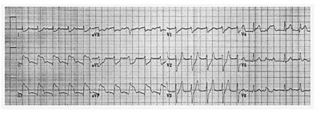
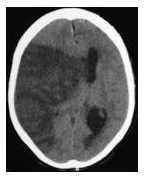

Questão 1 · Tumores anexiais e câncer de ovário · 4000073269Menina de 8 anos apresenta quadro de dor em baixo ventre. A ultrassonogra a revela tumor de origem ovariana medindo 8cm. Qual o tipo histológico mais provável neste caso?
A Tumor de Brenner.
B Cisto folicular.
C Cistoadenoma mucinoso.
D Adenocarcinoma papilífero.
E Disgerminoma.
Questão 2 · Hiperprolactinemia · 4000073267Paciente de 27 anos em investigação de amenorréia e galactorréia no ambulatório de ginecologia. A prolactina sérica encontrava-se elevada (115ng/mL) e a ressonância magnética demonstrou imagem compatível com macroadenoma hipofisário. Qual a conduta mais adequada para o caso?
A Goserelina.
B Ressecção transesfenoidal.
C Radioterapia.
D Cabergolina.
E Acetato de medroxiprogesterona.
Questão 3 · Quadro clínico · 4000073263Qual a doença que mais comumente se associa à queixa de dispaurenia progressiva?
A Endometriose.
B Câncer de colo uterino.
C Doença inflamatória pélvica.
D Miomatose uterina.
E Câncer de endométrio.
Questão 4 · Tratamento · 4000073260Sobre a embolização da artéria uterina no tratamento dos miomas uterinos podemos afirmar:
A A embolização das artérias uterinas é tratamento de escolha nas mulheres com desejo reprodutivo.
B Amenorréia e a diminuição da reserva ovariana podem ocorrer após o procedimento.
C A embolização é um bom método na suspeita de patologia maligna pela neovascularização do tumor.
D Em geral, após o procedimento a paciente permanece assintomática. A dor no pós- operatório deve ser sempre investigada pelo risco de hemorragia intra- abdominal.
E Boa opção nas mulheres assintomáticas.
Questão 5 · Tumores anexiais · 4000073258Paciente de 29 anos apresentando cisto simples em ovário direito medindo 4,5cm. Neste caso, a melhor conduta é:
A Solicitar CA-125.
B Punção guiada por ultrassonografia.
C Ressonância magnética.
D Laparoscopia.
E Expectante.
Questão 6 · BIRADS 5 · 4000073255Mulher de 61 anos realizou mamogra a que evidenciou nódulo espiculado medindo cerca de 3cm, categoria 5 no sistema BI-RADS. Qual a conduta mais adequada para o caso?
A Repetir mamografia em 6 meses.
B Biópsia percutânea (core biopsy) guiada por ultra-sonografia.
C Quadrantectomia com esvaziamento axilar.
D Biópsia cirúrgica com marcação por estereotaxia.
E Punção aspirativa por agulha fina.
Questão 7 · Síndrome prémenstrual · 4000073252Qual a medicação indicada no tratamento da tensão pré-menstrual com disforia?
A Fluoxetina.
B Clomifeno.
C Tibolona.
D Cabergolina.
E Fenitoína.
Questão 8 · Tratamento · 4000073250Paciente apresenta hipermenorréia há 6 meses devido à mioma submucoso de 2,8 cm de diâmetro. Neste caso, a melhor conduta é:
A Miomectomia abdominal.
B Histerectomia vaginal.
C Histerectomia abdominal subtotal.
D Miomectomia histeroscópica.
E Miomectomia laparoscópica.
Questão 9 · Quadro clínico · Exames complementares · Quadro clínico · 4000073247Paciente de 74 anos, menopausa aos 54 anos, refere sangramento vaginal há 2 meses. Na ultrassonogra a transvaginal observamos endométrio medindo 16mm. Qual a melhor conduta para este caso?
A Histeroscopia com biópsia.
B Curetagem uterina.
C Progestágenos.
D Ressonância magnética.
E Expectante.
Questão 10 · Métodos hormonais combinados · 4000073243Qual das opções abaixo não pode ser considerada um benefício não contraceptivo do anticoncepcional hormonal combinado?
A Melhora dos sintomas endometriose.
B Diminuição do risco de gestação ectópica.
C Redução da dismenorréia.
D Redução do risco de câncer de endométrio.
E Redução do risco de câncer de mama.
Questão 11 · Rotura uterina · 4000073239Paciente de 45 anos, 38 semanas, em período expulsivo após rápida evolução do trabalho de parto. Ao exame foi detectada hipertonia uterina que se seguiu de sangramento volumoso, hipotensão arterial, desaceleração dos batimentos cardíacos fetais e subida da apresentação. Qual sua hipótese diagnóstica?
A Descolamento prematuro de placenta.
B Rotura de vasa prévia.
C Rotura uterina.
D Distocia de colo.
E Anel de Bundle.
Questão 12 · Herpes e gravidez · Herpes na gestação · Obstetrícia · 4000073236Gestante com 37 semanas e 5 dias apresenta metrossistoles 4/10’/50’’, colo 90% apagado, dilatado 2cm, com a bolsa íntegra. O exame da vulva revela múltiplas lesões vesiculosas, algumas ulceradas, que segundo a paciente surgiram há poucos dias e que nunca apresentou quadro clínico semelhante anteriormente. Qual a conduta mais adequada para o caso?
A Aciclovir por via oral durante 7 dias.
B Tocólise e aciclovir por 7 dias.
C Aguardar evolução do trabalho de parto e tratar a infecção no puerpério com aciclovir por via oral durante 7 dias.
D Indicar cesariana.
E Iniciar tratamento com aciclovir venoso e aguardar evolução do parto.
Questão 13 · Fases clínicas do parto · 4000073232Em algumas situações especiais o diagnóstico do início do trabalho de parto pode ser desa ador na emergência obstétrica. Qual dos parâmetros abaixo não faz parte da síndrome do trabalho de parto?
A Contrações uterinas freqüentes e regulares.
B Dilatação do colo uterino.
C Perda do tampão mucoso.
D Formação da bolsa das águas.
E Insinuação do pólo cefálico.
Questão 14 · Obstetrícia · Perf il biof isico f etal PBF · 4000073230Na avaliação do bem-estar fetal pelo Per l Biofísico Fetal, o último parâmetro que se altera em função da hipóxia fetal é o(a):
A Tônus fetal.
B Movimento respiratório.
C Frequencia cardíaca.
D Líquido amniótico.
E Movimento fetal.
Questão 15 · Diagnóstico na gestação · Toxoplasmose · 4000073224Gestante na 10.a semana apresenta IgG e IgM positivas para toxoplasmose. A pesquisa de avidez da IgG revela taxas de alta avidez. Qual a conduta mais adequada para o caso?
A Recomendar a interrupção da gravidez.
B Amniocentese com 16 semanas para fazer PCR do líquido amniótico.
C Orientar o casal que a infecção é passada.
D Sulfadizina e pirimetamina.
E Espiramicina.
Questão 16 · Corioamnionite · 4000073216Gestante 16 anos, GI P0, 33 semanas, chega à maternidade relatando perda de líquido amniótico há 5 dias, tendo procurado atendimento por apresentar quadro febril desde a véspera. O exame especular revela saída de líquido amniótico purulento e de odor fétido oriundo do orifício cervical externo. No exame físico encontra-se BCF presente, ausência de contrações uterinas, colo BISHOP 3 e febre de 39°. Qual a conduta mais adequada para o caso?
A Induzir o parto.
B Cesariana.
C Antibióticos e aguardar maturidade pulmonar.
D Corticóide, antibiótico e manter gestação até 34 semanas.
E Corticóide e aguardar 48 horas para interromper gestação.
Questão 17 · Placenta prévia PP · 4000073209Gestante com antecedente de 5 cesarianas, encontra-se com 33 semanas e apresenta sangramento vultoso, rutilante e indolor. Ao exame: PA=100X60mmHg, BCF=155bpm, atividade uterina irregular. Qual o diagnóstico mais provável?
A Trabalho de parto.
B Placenta prévia.
C Vasa prévia.
D Rotura uterina.
E Descolamento prematuro da placenta.
Questão 18 · Gestação monoamniótica · Gêmeos conjugados · 4000073202Quando consideramos a corionicidade e a amniocidade a gemelidade imperfeita é sempre:
A Dicoriônica e diamniótica.
B Monozigótica e diamniótica.
C Monocoriônica e monoamniótica.
D Dizigótica e monoamniótica.
E Monocoriônica e diamniótica.
Questão 19 · Conduta obstétrica · Conduta · Préeclâmpsia com sinais de gravidade · 4000073198Gestante de 23 anos, GIP0, 36 semanas e 5 dias, apresenta cefaléia e escotomas. A pressão arterial aferida de 190x110mmHg. Qual a conduta mais adequada para o caso?
A Hidralazina + sulfato de magnésio e indução após estabilização clínica.
B Hidralazina + sulfato de magnésio e aguardar 72h para realizar indução.
C Hidralazina + sulfato de magnésio e cesárea imediata.
D Hidralazina, solicitar exames laboratoriais e induzir o parto com analgesia.
E Corticóide e aguardar 48h para interrupção da gestação.
Questão 20 · Modif icações locais · Sinais de probabilidade de gestação · 4000073196Consideramos sinais de probabilidade de gravidez, EXCETO:
A Nobile-Budin.
B Kluge.
C Osiander.
D Hegar.
E Puzos.
Questão 21 · Tratamento · 4000073189Qual é o tratamento de escolha inicial da sinusite em menores de 2 anos frequentadores de creche?
A Amoxicilina em dose duas vezes a habitual + clavulanato de potássio.
B Amoxicilina na dose habitual.
C Cefalexina.
D Sulfametoxazol + trimetoprim.
E Claritromicina.
Questão 22 · Convulsões pósvacina · Absolutas · Episódio hipotônicohiporresponsivo · 4000073185Qual das alternativas abaixo é uma contraindicação do uso da vacina tríplice bacteriana na sua forma de células inteiras e acelular?
A Febre persistente.
B Choro incontrolável.
C Convulsão.
D Anafilaxia.
E Síndrome hipotônica hiporresponsiva.
Questão 23 · Inf ectologia · 4000073181Todas as alternativas abaixo são manifestações compatíveis com a síndrome congênita do zika vírus, EXCETO:
A Artrogripose.
B Hidrocefalia.
C Displasia pulmonar.
D Microcefalia.
E Corioretinite.
Questão 24 · Sarampo · 4000073177Qual das alternativas abaixo está correta em relação ao sarampo?
A Os óbitos estão associados principalmente a pneumonia intersticial pelo vírus.
B O exantema é de evolução rápida e petequial.
C O diagnóstico deve ser descartado caso não seja visualizado o sinal de Koplik.
D A otite média aguda e a pneumonia são as complicações mais frequentes.
E A febre quando presente, indica infecção bacteriana secundária.
Questão 25 · Osteomielite · 4000073173Nos pacientes portadores de anemia falciforme qual dos agentes abaixo deve ser lembrado, além do esta lococo, como possível etiologia de osteomielite?
A Estreptococo B.
B Listeria.
C Micoplasma.
D Herpes vírus.
E Salmonela.
Questão 26 · Medição da pressão arterial · Cardiologia · 4000073168Em relação a hipertensão arterial sistêmica (HAS) em crianças e adolescentes, assinale a assertiva correta:
A Hipertensão grave e sintomática em crianças geralmente é de origem secundária, devendo ser investigada uma causa básica.
B Nos lactentes, devido a imaturidade do sistema cardiovascular, a prevalência de HAS é alta, aproximadamente 40%.
C A obesidade em escolares, ao contrário dos adultos, não predispõe a HAS, pois essa faixa etária possui maior plasticidade vascular.
D O uso de manguitos de adultos na aferição da pressão arterial (PA) em crianças leva ao aumento do valor real da PA.
E O tratamento em adolescentes, pela maior gravidade, já deve ser iniciado com duas classes de drogas anti- hipertensivas.
Questão 27 · Tratamento · 4000073163Qual das alternativas abaixo é uma terapia empregada no sarampo?
A Oseltamivir.
B Vitamina A.
C Somente sintomáticos.
D Aciclovir.
E Antibioticoterapia profilática.
Questão 28 · Contraindicações · Indicação · 4000073159Assinale a assertiva INCORRETA em relação a vacina do sarampo:
A Em situação de surto pode ser aplicada em crianças entre 6 meses e 1 ano de idade.
B Não pode ser utilizada em criança cuja mãe seja HIV positiva.
C São considerados corretamente vacinados para o sarampo todos que tenham 2 doses de sarampo após 1 ano de idade.
D Uma das causas do ressurgimento do sarampo é a baixa adesão da população à vacinação.
E Quando aplicada em menores de 1 ano a dose é considerada dose zero e a criança deverá receber as doses preconizadas no calendário vacinal normalmente.
Questão 29 · Pneumologia · 4000073156Assinale a assertiva correta na síndrome respiratória aguda grave, de acordo com o manual do Ministério da Saúde:
A O oseltamivir está indicado somente para os pacientes internados em unidades de tratamento intensivo.
B O desconforto respiratório é um sinal de gravidade.
C A hidratação venosa deve ser evitada devido ao risco de edema agudo de pulmão.
D A oxigenoterapia se restringe aos casos em que haja cianose.
E A radiografia de tórax não deve ser solicitada em menores de 1 ano, devido inespecificidade e confundimento nessa faixa etária.
Questão 30 · Situações em que há restrições ao aleitamento materno · 4000073149É uma contraindicação à amamentação:
A Mãe portadora de Hepatite B.
B Mãe portadora de tuberculose pulmonar em uso de esquema RIPE até o término do tratamento.
C Mãe com infecção puerperal em uso de cefalospotina de 3ª geração.
D Mãe HIV positiva, assintomática, com carga viral indetectável.
E Mãe com história familiar de câncer de mama.
Questão 31 · Principais apresentações clínicas · 4000073146Qual das cardiopatias congênitas abaixo é acianótica?
A Tetralogia de Fallot.
B Comunicação inter atrial (CIA).
C Transposição dos grandes vasos.
D Atresia da artéria pulmonar.
E Anomalia de Ebstein.
Questão 32 · Pneumologia · 4000073141Recém-nascido, AIG, 42 semanas de gestação, apresenta taquipnéia e desconforto respiratório precoce, com piora importante e progressiva. Radiogra a de tórax com in ltrado irregular e grosseiro em ambos os pulmões além de achatamento do diafragma. Qual o diagnóstico provável?
A Síndrome da aspiração meconial.
B Persistência da circulação fetal.
C Doença da Membrana Hialina.
D Enfisema lobar congênito.
E Taquipnéia transitória do recém nascido.
Questão 33 · Otorrinolaringologia · 4000073137Escolar, 9 anos, apresenta adenomegalia cervical anterior unilateral e supra clavicular há dois meses. Refere “aumento progressivo das ínguas”. O ultrassom de pescoço revela gânglios de 4cm em média, sem sinais de liquefação ou necrose central. Ao exame não aderidos à planos profundos, porém bastante endurecidos. As sorologias para toxoplasmose, citomegalovírus e mononucleose foram negativas. Qual o exame complementar indicado para elucidação diagnóstica?
A Tomografia computadorizada de tórax.
B Hemograma e dosagem de proteína C reativa (PCR).
C VDRL.
D Aspiração do gânglio por agulha.
E Biópsia ganglionar.
Questão 34 · Contraindicações · 4000073130Qual das situações abaixo está contraindicado o uso da vacina BCG?
A Lactentes expostos verticalmente ao HIV.
B Prematuros.
C Lactentes com encefalopatia hipóxico isquêmica.
D Lactentes com o diagnóstico de imunodeficiência severa combinada.
E Lactentes cujos pais já tiveram tuberculose tratada.
Questão 35 · Agentes etiológicos · 4000073128Escolar, 8 anos, com história prévia de asma brônquica, refere “cansaço”, há uma semana e febre baixa com leve taquipnéia sem esforço respiratório há dois dias. A ausculta pulmonar revela sibilos. A mãe refere que neste episódio, “a chieira no peito“ está custando a passar, mesmo tendo usado suas medicações corretamente. O RX revela leve in ltrado bibasal. Restante do exame físico sem alterações. Qual o agente etiológico mais provável?
A Pneumococo.
B Vírus Sincicial respiratório (RSV).
C Estafilococo.
D Micoplasma.
E Gram negativos/Pseudomonas.
Questão 36 · Diarreia Aguda · Zinco · 4000073119Em relação à diarreia aguda em crianças segundo o manual do Ministério da Saúde Qual das assertivas abaixo está CORRETA?
A O antibiótico deve ser utilizado em todos os menores de 1 ano de idade.
B Os desnutridos devem ser imediatamente transferidos para uma unidade terciária, onde se dará início a terapia de reidratação venosa.
C Na presença de sangue, o antibiótico deve ser administrado por via endovenosa.
D A prioridade é o diagnóstico etiológico, já que o tipo de hidratação deve ser guiado por esse.
E O uso do zinco está indicado, sendo administrado 1 X dia por 10 a 14 dias.
Questão 37 · Tratamento · 4000073114Qual o esquema indicado para o tratamento da tuberculose osteoarticular em maiores de 10 anos?
A Rifampicina (R), isoniazida (H) e pirazinamida (P) durante 2 meses e RH por 4 meses.
B RHZ durante 6 meses.
C RHZ e etambutol (E) durante 2 meses e RH por 4 meses.
D RHZE durante 2 meses e RH por 10 meses.
E RHZE durante 1 ano.
Questão 38 · Tratamento · 4000073109Assinale a assertiva correta em relação ao diagnóstico de tuberculose pulmonar em crianças menores de 10 anos:
A O sistema de escore, que considera critérios clínicos e epidemiológicos, oferece baixa sensibilidade e especificidade e não deve ser usado no diagnóstico.
B A radiografia de tórax (RX) demonstra cavitação ou derrame pleural na maior parte dos casos.
C A dificuldade de isolamento do agente ocorre devido ao fato de serem paucibacilares e na maior parte dos casos sem tosse efetiva.
D Devido à dificuldade da realização de RX em lactentes, a tomografia de tórax deve sempre ser solicitada.
E O teste tuberculínico (PPD) não é utilizado nessa faixa etária por causa da interferência da vacina BCG.
Questão 39 · Síf ilis congênita · Conduta · 4000073104Em relação à sífilis congênita, assinale a assertiva correta de acordo com o manual do Ministério da Saúde:
A Toda gestante deve ser testada duas vezes para sífilis durante o pré-natal, uma no primeiro trimestre e outra no terceiro trimestre.
B Um teste treponêmico com IgM negativo no sangue do bebê exclui o diagnóstico de sífilis congênita.
C O diagnóstico do RN (recém nascido) pode ser realizado por testagem do sangue do cordão umbilical.
D No caso de tratamento materno inadequado todo RN deve receber apenas uma dose de penicilina benzatina.
E A clínica do RN é exuberante, com alterações ósseas e hematológicas, estando presente em 70% dos casos.
Questão 40 · Marcos Importantes · 4000073100Assinale a assertiva correta em relação ao crescimento e desenvolvimento do lactente:
A O reconhecimento de expressões faciais, como o sorriso, por exemplo, ocorre a partir do sexto mês de vida.
B É normal o decréscimo de até 20% do peso do nascimento na primeira semana de vida.
C Em torno dos 12 meses a criança é capaz de falar algumas palavras, além das do tipo “mama”, “dada”.
D O reflexo da marcha persiste durante todo o primeiro ano de vida.
E Somente em torno dos 18 meses é capaz de responder ao chamado do próprio nome.
Questão 41 · Princípios e Diretrizes do SUS na Lei n 80801990 · 4000073096Assinale a alternativa correta quanto o Conselho Nacional de Saúde.
A É um órgão meramente consultivo.
B É um órgão temporário instalado durante as Conferências Nacionais de Saúde.
C É composto apenas por gestores das 3 esferas de governo.
D É composto apenas por profissionais de saúde.
E É um dos instrumentos de Gestão Participativa no SUS.
Questão 42 · Medidas de Desempenho de Testes Diagnósticos ou Medidas de Perf ormance de Testes Diagnósticos · 4000073092Foi aplicado um novo teste diagnóstico em 100 pessoas. Neste grupo amostral haviam 10 pessoas doentes segundo o resultado de um outro teste padrão ouro previamente utilizado. O teste ora em investigação apresentou resultado positivo nos 10 doentes e somente neles. Pelo descrito conclui-se que o novo teste possui:
A Baixa Sensibilidade e Baixa Especificidade.
B Alta Sensibilidade e Alta Especificidade.
C Baixa Sensibilidade e Alta Especificidade.
D Alta Sensibilidade e Baixa Especificidade.
E Com os dados apresentados só é possível definir a alta sensibilidade do teste.
Questão 43 · Financiamento na Lei n 81421990 · 4000073087Quem é o principal financiador da rede pública de saúde?
A Municípios.
B Estados.
C União.
D Municípios, Estados e União dividem o aporte financeiro igualmente.
E Estados e União dividem o aporte financeiro igualmente.
Questão 44 · Viés de seleção · 4000073085Assinale a alternativa que contém um viés metodológico de seleção:
A Tamanho inadequado da amostra.
B Baixa validade dos instrumentos de coleta de dados.
C Uso inadequado dos instrumentos apropriados.
D Preparação deficiente do observador.
E Maior ênfase na procura dos dados em um dos grupos do estudo.
Questão 45 · Outras normativas do SUS e da Saúde em geral · 4000073078A “Carta dos Direitos dos Usuários da Saúde” reúne os princípios básicos de cidadania que asseguram aos brasileiros o ingresso digno nos sistemas de saúde. EXCETO:
A Todo cidadão tem direito de receber os medicamentos experimentais utilizados nas pesquisas quando não houver medicamento de eficácia comprovada para o seu problema.
B Todo cidadão tem direito ao acesso ordenado e organizado aos sistemas de saúde.
C Todo cidadão tem direito ao tratamento adequado e efetivo para o seu problema.
D Todo paciente tem direito ao atendimento humanizado, acolhedor e livre de qualquer discriminação.
E Todo cidadão tem responsabilidade para que seu tratamento ocorra de forma adequada.
Questão 46 · Política Nacional de Atenção Básica PNAB · 4000073073Assinale a alternativa que contempla uma diretriz ou fundamento da Atenção Básica:
A Ter um território adstrito, sendo responsável pela gestão de todas as unidades de saúde de uma determinada área geográfica.
B Possibilitar o acesso universal e contínuo aos serviços de saúde, garantindo o atendimento 24h por dia.
C Atuar como porta de entrada preferencial a rede de atenção à saúde, promovendo o acolhimento do usuário e sua vinculação.
D Promover a promoção à saúde e prevenção de agravos, encaminhando os casos que necessitem de tratamento e reabilitação para serviços de maior complexidade.
E Garantir o processo de trabalho baseado na intervenção técnico-científica do profissional de saúde, diminuindo assim a interferência negativa dos saberes dos usuários.
Questão 47 · Ensaios clínicos · 4000073068Assinale a alternativa correta quanto aos estudos de ensaio clínico randomizado:
A Possui baixa credibilidade como produtor de evidência científica.
B Possui grande dificuldade na formação do grupo controle.
C A intervenção possui pouca uniformização, o que pode afetar o resultado.
D A intervenção e a verificação dos resultados poderão ser dissimuladas com o uso de placebos e aferição duplo- cega.
E Apenas um desfecho clínico pode ser investigado em cada estudo.
Questão 48 · Tipos de Estudos Epidemiológicos · 4000073063Assinale a alternativa correta em relação aos desenhos de estudo:
A Em um estudo transversal, exposição e doença são investigadas simultaneamente.
B Em um estudo de coorte, o aparecimento da doença é estudado inicialmente e a partir daí estuda-se a exposição.
C Em um estudo caso-controle, estuda-se inicialmente a exposição e a partir daí o aparecimento da doença.
D Tanto os estudos de coorte quanto os de caso-controle, o aparecimento da doença é estudado inicialmente e a partir daí estuda-se a exposição.
E Tanto os estudos de coorte quanto os de caso-controle, estuda-se inicialmente a exposição e a partir daí o aparecimento da doença.
Questão 49 · Estudos de CasoControle · 4000073058Visando a estudar os fatores de risco para óbitos perinatais foi realizado um estudo, onde as características dos 234 natimortos ocorridos na cidade em determinado ano, foram comparadas com as de 2555 recém-nascidos do mesmo período. Qual é o tipo deste estudo?
A Coorte.
B Caso-controle.
C Série de casos.
D Sobrevida.
E Coorte transversal.
Questão 50 · Epidemias · 4000073054A análise da representação grá ca de uma epidemia observou-se que houve uma elevação rápida no número de casos, seguida de um curto platô e então da diminuição também rápida destes, caracterizando um pico de base relativamente estreita. Esta representação grá ca sugere, dá pista, de que a causa da epidemia provavelmente possui todas as características abaixo, EXCETO:
A Exposição simultânea dos indivíduos acometidos.
B Fonte única.
C Tipo de agente único.
D Atuação maciça do agente em um curto período de tempo.
E Transmissão por contato direto pessoa a pessoa.
Revisar: possível letra faltando em enunciado
Questão 51 · Razão de Mortalidade Materna · 4000072914Qual o denominador do coeficiente de mortalidade materna?
A População total no período.
B População de sexo feminino no período.
C População de sexo feminino em idade fértil na metade do período.
D Número de óbitos no período.
E Número de nascidos vivos no período.
Questão 52 · Prevalência pontual · Incidência · 4000072911Um grupo de 400 crianças foi rastreado com exame parasitológico de fezes no início do ano. Foi identi cado que 40 dessas crianças tinham exame positivo para Ascaris. Neste mesmo grupo de 400 crianças foram diagnosticados 2 casos de sarampo durante um ano de acompanhamento. Assinale a alternativa que apresenta corretamente as respectivas taxas de prevalência de infestação por Ascaris e incidência de sarampo nesta população.
A 0,5% e 5%
B 1% e 2%
C 4% e 1%
D 10% e 0,5%
E 40% e 0,05%
Revisar: possível letra faltando em enunciado
Questão 53 · Política Nacional de Atenção Básica PNAB · 4000072907Assinale a alternativa que contém uma atribuição especí ca do agente comunitário de saúde na estratégia de saúde da família.
A Fazer o gerenciamento dos insumos necessários para o funcionamento da UBS.
B Realizar consultas clínicas domiciliares nas doenças de potencial de gravidade leve.
C Realizar os atendimentos fisioterápicos domiciliares após avaliação dos profissionais especializados na UBS.
D Desenvolver atividades de promoção da saúde, de prevenção das doenças, e de vigilância à saúde.
E Realizar o diagnóstico da saúde bucal da população adstrita para o planejamento das atividades terapêuticas.
Revisar: possível letra faltando em enunciado
Questão 54 · Mortalidade · 4000072903Assinale a alternativa CORRETA:
A As mudanças nas taxas de mortalidade, com o passar do tempo, são em geral de grande amplitude, o que as torna muito úteis para avaliações de curto prazo.
B Taxas elevadas de mortalidade por causas evitáveis sugerem a existência de baixos níveis sanitários e sociais da população.
C Uma dificuldade para adoção da taxa de mortalidade para avaliação de saúde coletiva é a ausência de uma base de dados nacional.
D Uma dificuldade operacional para utilização da taxa de mortalidade é a falta de critério objetivamente definido para o óbito.
E As estatísticas de mortalidade exprimem de forma bem completa a história de uma doença e de seus fatores determinantes.
Questão 55 · Variável discreta · 4000072899Assinale a alternativa que contém uma variável discreta.
A Peso.
B Estatura.
C Anos de escolaridade.
D Glicemia.
E Pressão arterial sistólica.
Questão 56 · Mortalidade · 4000072896Assinale a alternativa correta em relação ao coe ciente geral de mortalidade de uma determinada população em um período de tempo definido.
A O denominador é o número total de doentes.
B O denominador é o número total de óbitos.
C O numerador é o número representativo da população.
D O numerador é o número total de doentes.
E O numerador é o número total de óbitos.
Revisar: possível letra faltando em enunciado
Questão 57 · Princípios e Diretrizes do Sistema Único de Saúde SUS · 4000072892O conceito de equidade empregado no SUS está expresso em qual das alternativas abaixo:
A O acesso ao serviço de saúde deve ser garantido a todas as pessoas independente de qualquer característica social ou pessoal.
B Deve haver o atendimento da pessoa como um todo, incluindo ações de promoção, prevenção, tratamento e reabilitação.
C O investimento em saúde dever ser preferencialmente direcionado aos locais onde o a carência é maior, locais com baixo desenvolvimento socioeconômico.
D Os serviços devem ser organizados em níveis crescentes de complexidade em uma determinada área geográfica.
E A responsabilidade com a saúde da população deve ser igualmente distribuída entre as três esferas de governo.
Questão 58 · Redução Relativa do Risco RRR ou Ef icácia · 4000072889Qual a definição de eficácia na avaliação de uma determinada tecnologia aplicada em saúde?
A É a investigação do impacto desta tecnologia em condições ideais de observação.
B É a investigação do impacto desta tecnologia em condições normais, isto é, no mundo real.
C É a investigação do impacto desta tecnologia levando-se em consideração também os recursos financeiros empregados.
D É a investigação do impacto desta tecnologia levando-se em consideração também os recursos humanos e materiais empregados.
E Todas as anteriores estão corretas.
Questão 59 · Concordância interobservador · 4000072885Dois anatomopatologistas chegam ao mesmo diagnóstico quando examinam, independente um do outro, a mesma lâmina de uma biópsia de pele. Qual a característica descrita?
A Valor preditivo positivo.
B Sensibilidade.
C Especificidade.
D Confiabilidade.
E Validade intra observador.
Questão 60 · Risco Relativo RR Razão de Riscos · 4000072882Considerando uma determinada população, observou-se que havia 15 óbitos anuais por coronariopatia por 1000 adultos com colesterol sérico aumentado (grupo A) e 5 nos que possuíam colesterol sérico baixo (grupo B). Qual o risco relativo de mortalidade por coronariopatia no grupo A?
A 0,333
B 3
C 5
D 10
E 15
Questão 61 · Fisiopatologia · Quadro Clínico · 4000072878A doença mais comumente associada ao timoma é:
A Hiperparatiroidismo.
B Síndrome de Pierre Marie.
C Miastenia Gravis.
D Macroglobulinemia.
E Hipertireoidismo.
Questão 62 · Fenômeno de Raynaud · 4000072873No fenômeno de Raynaud secundário (síndrome de Raynaud) a doença do tecido conjuntivo mais frequente é:
A Síndrome de Sjögren.
B Lúpus eritematoso sistêmico.
C Doença mista do colágeno.
D Artrite reumatoide.
E Esclerodermia sistêmica.
Questão 63 · Tratamento e conduta · 4000072871Paciente feminina, branca, 39 anos, apresentando lesão melanocítica com cerca de 2,0 cm em antebraço esquerdo, que foi retirado com margens cirúrgicas de 0,2cm e cujo laudo histopatológico foi de melanoma nível IV de Clark com Breslow 0,7 mm, sem regressão e/ou ulceração, índice mitótico nulo. O exame clínico não evidencia qualquer alteração e o exames de estadiamento não mostram doença metastática. Qual deve ser a conduta diante deste caso?
A Ampliação de margem (ressecção ampliada).
B Observação clínica.
C Ressecção ampliada + linfadenectomia axilar.
D Ressecção ampliada + Pesquisa de linfonodo sentinela.
E Amputação de antebraço.
Questão 64 · Manif estações Clínicas e Exame Físico · Cirurgia · 4000072864Paciente de 64 anos, diabético, dá entrada na emergência de um hospital geral, com dor abdominal de início agudo, em forte intensidade, há cerca de quatro horas. Ao exame físico, apresenta abdome levemente distendido, doloroso à palpação, sem sinais de irritação peritoneal, peristalse diminuída, com ausculta cardíaca sugerindo brilação atrial. O diagnóstico mais provável para esse paciente é:
A Úlcera perfurada.
B Apendicite aguda.
C Oclusão intestinal.
D Isquemia mesentérica.
E Infarto agudo do miocárdio.
Questão 65 · Tratamento Cirúrgico da Úlcera Péptica · Cirurgia · 4000072858Em paciente portador de úlcera gástrica pré-pilórica (Tipo III), com indicação de tratamento cirúrgico, a operação de escolha é:
A Gastrectomia subtotal com reconstrução a Billrtoh II.
B Gastrectomia total.
C Antrectomia + vagotomia troncular.
D Antrectomia com reconstituição em Y de Roux.
E Piloroplastia Heineke-Mikulicz.
Questão 66 · Hérnia de Spiegel · 4000072854A hérnia que ocorre ao nível da linha semilunar, um pouco ao lado do músculo reto, através das aponeuroses combinadas dos músculos transversos do abdômen e obliquo interno, é conhecida como hérnia:
A De Spiegel.
B De Richter.
C Do Obturador.
D De Litre.
E De Grynfelt.
Questão 67 · Neoplasia Sólida Pseudopapilar · 4000072849Uma mulher de 28 anos procurou atendimento médico com queixa de dor abdominal. Durante exame físico foi observado tumoração em hipocôndrio esquerdo. Realizou ressonância magnética que mostrou lesão sólido-cística com cerca de 10 cm de diâmetro, em corpo e cauda do pâncreas. Exames laboratoriais evidenciavam C19.9=35 U/ml (Referência < 37 U/ml) e glicose=76mg/dl (Referência 75 a 99 mg/dl). A paciente foi submetida a pancreatectomia corpo-caudal videolaparoscópica com preservação esplênica. O exame anatomopatológico macroscópico identi cou uma tumoração sólida- cística. Qual o provável diagnóstico?
A Tumor sólido pseudopapilar.
B Neoplasia intraductal mucinosa papilífera.
C Pancreatoblastoma.
D Pseudocisto de pâncreas.
E Insulinoma.
Questão 68 · Hiperparatireoidismo primário · Neoplasia endócrina múltipla tipo 2A NEM 2A · 4000072845Hiperparatireoidismo primário O hiperparatireoidismo primário pode estar associado a qual destas condições clínicas?
A Insuficiência renal.
B Osteodistrofia hereditária de Albright.
C Neurofibromatose do tipo 1.
D Lesão iatrogênica das glândulas paratireoides durante a tireoidectomia total.
E Neoplasia Endócrina Múltipla tipo 2A.
Questão 69 · Principais f raturas associadas · 4000072841Um paciente de 23 anos, é levado ao hospital de emergência à acidente automobilístico (auto x poste), sendo ejetado do veículo. Na admissão, paciente encontra-se entubado, pupilas isocóricas, fotoreagentes. Ausculta pulmonar e cardíacas sem alterações. Pressão arterial 110/90mmHg, Frequência cardíaca 112bpm. Membro superior direito com edema e deformidade na região do braço, com diminuição dos pulsos distais e do enchimento capilar. Apresenta também aumento de volume e equimose em coxa esquerda, com diminuição da temperatura e dos pulsos no referido membro. Abdome ácido, sem distensão. Com relação ao trauma vascular, qual das alternativas abaixo está associada com a maior incidência de lesão arterial?
A Luxação de ombro.
B Fratura diafisária de fêmur.
C Fratura de ulna.
D Luxação posterior de joelho.
E Fratura de clavícula.
Questão 70 · Síndromes de Câncer Colorretal Hereditário · 4000072837A síndrome de Peutz-Jeghers, que pode ser caracterizada por pequena quantidade de pólipos e lesão cutâneas pigmentadas e por uma maior incidência de tumores gastrointestinais, câncer de mama e câncer pancreático é causada pela mutação do Gene:
A MSH2.
B TSC1.
C CDH1.
D STK11.
E PTC.
Questão 71 · Síndrome de Polipose Adenomatosa Hereditária · 4000072835A hipertrofia congênita do epitélio pigmentar retiniano, está associada a qual síndrome de câncer hereditário?
A Polipose juvenil.
B Peutz - Jeghers.
C Turcot.
D Ruvalcaba Myhre - Smith.
E Polipose adenomatosa familiar.
Questão 72 · Sarcomas de Partes Moles · Cirurgia · 4000072829Os sarcomas de partes moles podem estar associados a algumas síndromes hereditárias. O rabdomiossarcoma está associado a:
A Síndrome de Werner.
B Doença de von Recklinghausen.
C Doença de Bourneville.
D Retinoblastoma.
E Síndrome de Gardner.
Questão 73 · Cirurgia · Íleo Biliar · 4000072825Paciente de 70 anos apresenta dor tipo cólica em epigástrio, com irradiação para hipocôndrio e região lombar direita, em crises. Em certo momento, apresenta dor tipo cólica em abdômen com vômitos e parada de eliminação de gases e fezes. O raio X de tórax e abdômen apresenta distensão de delgado com níveis hidroaéreos e aerobilia.Trata-se de um caso de obstrução intestinal causada por:
A Bolo de áscaris.
B Íleo biliar.
C Invaginação intestinal.
D Trombose mesentérica.
E Apendicite aguda.
Questão 74 · Hérnias Incomuns · Cirurgia · 4000072819Um paciente de 30 anos dá entrada na emergência com quadro de tumoração irredutível com hiperemia em região inguinal direita, sendo aventada a hipótese de hérnia inguinal estrangulada. Foi submetido a inguinotomia e durante o procedimento cirúrgico foi evidenciado apendicite aguda no saco herniário. Este tipo de hérnia é conhecido como:
A Grynfelt.
B Petit.
C Litre.
D Amyand.
E Macvay.
Questão 75 · Nef rologia · 4000072815Em relação aos aspectos anatomopatológicos, no feocromocitoma, é correto afirmar:
A A incidência de neoplasia maligna é semelhante entre os tipos esporádico e familiar.
B O tipo familiar só se manifesta em pacientes mais velhos.
C A maioria dos casos são considerados esporádicos e atingem apenas uma das glândulas.
D A localização extra-adrenal é tão frequente quanto a intraglandular.
E O diagnóstico é clínico, uma vez que os exames de imagem não são capazes de detectar lesões pequenas no interior da glândula.
Questão 76 · Tratamento · Cirurgia · 4000072811Uma paciente de 49 anos, obesa, foi submetida à colecistectomia videolaparoscópica devido a colelítiase sintomática. Durante o ato cirúrgico não foi realizado colangiogra a. Evoluiu no 3º dia pós-operatório com icterícia e dor abdominal, acompanhada de febre com calafrios. A conduta neste caso deve ser:
A Laparotomia de imediato.
B Colangiorressonância e, se for coledocolitíase, indicar abordagem por via convencional.
C Tomografia do abdome e, se for coledocolitíase, indicar abordagem laparoscópica.
D Colangiorressonância, e se for coledocolitíase, indicar CPRE.
E CPRE de imediato.
Questão 77 · Perf uração Iatrogênica · 4000072807A principal causa de perfuração esofágica é:
A Tumor perfurado.
B Iatrogênica.
C Síndrome de Boerhaave.
D Trauma perfurante.
E Ingestão de soda cáustica.
Questão 78 · Hipoglicemia em indivíduos não diabéticos · Insulinoma · Insulinoma · 4000072802Um paciente de 32 anos foi internado em um hospital geral devido a desmaios frequentes, durante um dos episódios foi realizado uma glicemia capilar com resultado de 40g/dl. Apresentou outros 3 episódios semelhantes com melhora dos sintomas após a administração de glicose hipertônica intravenosa. Durante a investigação realizou TC de abdome e pelve que mostrou lesão nodular de 3cm em corpo pancreático. O provável diagnóstico é:
A Vipoma.
B Adenocarcinoma pancreático.
C Insulinoma.
D Glucanoma.
E Gastrinoma.
Questão 79 · Cirurgia · Câncer do Canal Anal · 4000072799As neoplasias da área anal são raras e representam um amplo espectro de tumores benignos e malignos. O tipo histológico dos tumores associados à Doença de Paget extramamária do ânus, é:
A Adenocarcinoma.
B Carcinoma escamoso.
C Carcinoma verrucoso.
D Melanoma.
E Mioblastoma.
Questão 80 · Osteossarcoma · 4000072794Osteossarcoma é definido como um tumor maligno formador de osso que contém um estroma francamente sarcomatoso, em relação a este tipo de sarcoma podemos afirmar que:
A É o sarcoma radioinduzido mais frequente.
B Dificilmente acomete os ossos longos dos membros inferiores.
C O sinal radiológico característico é a lesão permeativa com reação periosteal lamelar, aspecto de “casca de cebola”.
D A presença de metástase pulmonar contraindica o tratamento cirúrgico radical.
E O diagnóstico histopatológico pode ser confirmado pela presença das rosetas de Homer Wright.
Questão 81 · Tratamento f armacológico da insuf iciência cardíaca com f ração de ejeção reduzida · Cardiologia · 4000072791Qual das classes de fármacos abaixo está contra-indicada em pacientes com insuficiência cardíaca?
A Bloqueadores de canal de cálcio di-hidropiridínicos.
B Beta-bloqueadores.
C Bloqueadores de canal de cálcio não di-hidropiridínicos.
D Inibidores da neprilisina.
E Inbidores da enzima conversora de angiotensina.
Questão 82 · Tratamento · 4000072789Um militar de 22 anos de idade apresenta meningite por militares. Qual a conduta indicada em relação aos colegas de dormitórios?
A Profilaxia apenas para aqueles cuja cultura de líquor for positiva.
B Ceftriaxone para todos eles.
C Rifampicina para todos eles.
D Vacinação com vacina conjugada.
E Profilaxia apenas para aqueles cuja cultura de swab nasal for positiva.
Questão 83 · Etiologia · 4000072787Qual dos patógenos abaixo não é causa de uretrite em homens?
A Gardnerella vaginalis.
B Mycoplasma genitalium.
C Neisseria gonorrhoeae.
D Tricomonas vaginalis.
E Ureaplasma urealyticum.
Questão 84 · Prevenção · 4000072783Qual dos pacientes abaixo têm indicação de profilaxia para endocardite bacteriana?
A Uma mulher de 23 anos com prolapso de válvula mitral que será submetida à uma obturação dentária.
B Uma mulher de 24 anos de idade com defeito de septo atrial completamente corrigido aos 2 anos de idade que será submetida a uma cistoscopia para hematúria.
C Um homem de 30 anos de idade, usuário de drogas intravenosas e endocardite prévia, que será submetido a uma cirurgia gengival.
D Um homem de 45 anos de idade, com prótese valvar mitral há 5 anos que será submetido à limpeza de dentes.
E Uma mulher de 63 anos, com prótese aórtica há 2 anos, que será submetida a uma colonoscopia de rotina.
Questão 85 · Manif estações clínicas · 4000072779A infecção por qual dos agentes abaixo mais frequentemente pode cursar com sinal de Faget?
A P. aeruginosa.
B Salmonella typhi.
C S. aureus.
D S. pneumoniae.
E S. pyogenes.
Questão 86 · Cirurgia · 4000072775Um homem de 54 anos de idade, assintomático, acaba de realizar seu primeiro exame de toque retal. O exame revelou aumento do volume prostático, com um nódulo no seu lobo direito. Ele nunca realizou dosagem de PSA. Qual o próximo passo para esclarecimento diagnóstico?
A Cintilografia óssea para detecção de metástases.
B Dosagem de PSA.
C Pet-scam.
D Repetir o toque retal em 3 meses.
E Biópsia transretal guiada por ultra-sonografia.
Questão 87 · Características Gerais · 4000072774Qual dos fatores abaixo não está implicado no aumento do risco para desenvolvimento de câncer de cabeça e pescoço?
A Etilismo.
B Infecção pelo vírus Epstein Barr.
C Infecção pelo Helycobacter pylori.
D Infeção pelo HPV.
E Tabagismo.
Questão 88 · Tratamento e conduta · 4000072770Uma mulher de 49 anos de idade com diagnóstico de melanoma em estágio IIB evolui com dispneia e múltiplas metastatases pulmonares. Antes de iniciar a quimioterapia, qual das mutações genéticas abaixo indicará tratamento específico?
A BRAF
B C-KIT
C ERKs”
D N-RAS
E MEK
Questão 89 · Corpos de HowellJolly · Corpos de Heinz · 4000072767Uma paciente recém-diagnosticada com leucemia de células pilosas e ainda não submetida a qualquer tratamento apresenta corpúsculos de Howell-Jolly, corpúsculos de Heinz, e hemácias nucleadas. Qual a interpretação destes achados?
A Infiltração esplênica difusa pelo tumor.
B Coagulação intravascular disseminada.
C Anemia hemolítica.
D Pancitopenia.
E Transformação para leucemia aguda.
Questão 90 · Fisiologia · 4000072762Qual proteína é o mediador primário da adesão plaquetária?
A Colágeno.
B Endotelina.
C Fator tissular.
D Trombina.
E Fator de Von Willebrand.
Questão 91 · Cirurgia · 4000072754Qual das afirmativas abaixo é INCORRETA a respeito da disfunção erétil masculina?
A A detumescência peniana é mediada pelo sistema nervoso parassimpático.
B A ejaculação é mediada pelo sistema nervoso simpático.
C O óxido nítrico aumenta a ereção.
D O sildenafil mantém a ereção pela inibição do GMPcíclico.
E A testosterona aumenta a libido.
Questão 92 · Nef rologia · 4000072751Um homem de 30 anos de idade, sem comorbidades prévias é admitido na emergência com torpor. Seus exames revelam hiponatremia e supressão dos níveis séricos de hormônio anti-diurético. Qual o diagnóstico provável?
A Diabetes insipidus de origem central.
B Cirrose.
C Desidratação.
D Insuficiência cardíaca.
E Polidipsia psicogênica.
Questão 93 · Fibrose Cística · Diagnóstico · Etiologia · 4000072748Um rapaz de 22 anos de idade com história de brose cística apresentou quadro de tosse seguido por hemoptise volumosa (sangue vivo). Qual o provável sítio de sangramento?
A Capilares alveolares.
B Artérias brônquicas.
C Varizes esofageanas.
D Artéria pulmonar.
E Veias pulmonares.
Questão 94 · Tumores do Sistema Nervoso Central · 4000072741Um homem de 46 aos de idade é admitido na emergência após um acidente automobilístico. Ele insiste em dizer que não fez uso de álcool ou drogas e que não viu outro carro vindo em sua direção pelo seu lado direito. Não há alterações pupilares e apesar da acuidade visual normal, ele apresenta hemianopsia bitemporal. Qual a principal hipótese diagnóstica neste caso?
A Glioma de lobo occipital.
B Lesão de nervo ótico pós-quiasmática à direita.
C Acidente vascular cerebral em lobo parietal esquerdo.
D Adenoma pituitário.
E Deslocamento de retina.
Questão 95 · Tratamento · Quadro Clínico · 4000072738Todas as medicações abaixo apresentam-se potencialmente e cazes para o tratamento da Doença de Alzheimer, EXCETO:
A Donepezil.
B Galantamina.
C Memantina.
D Oxibutina.
E Rivastigmina.
Questão 96 · Quadro Clínico · Critérios Diagnósticos · 4000072734Uma paciente do sexo feminino, 90 anos de idade, previamente hígida, é internada por sepse urinária. Durante o plantão noturno a paciente evolui com alteração do estado mental, estando apática e com utuação do estado mental durante o dia. Ao exame ela apresenta-se sonolenta, mas facilmente responsiva aos estímulos verbais. Além das alterações já descrita, qual o ítem necessário para que seja diagnosticado delirium neste caso?
A Alteração do ciclo sono-vigília.
B Desorientação.
C Falta de atenção.
D Agitação psicomotora.
E Distúrbios sensitivos.
Questão 97 · Fibrinólise no tratamento do IAMCSST · 4000072731Um paciente do sexo masculino, 68 anos de idade, sem comorbidades conhecidas, vem ao INTO para revisão, 10 dias após ter sido submetido à uma osteossíntese de rádio distal. Durante o atendimento ele refere forte dor precordial opressiva, com irradiação para a mandíbula. O médico plantonista solicita um eletrocardiograma (abaixo). Sabendo que não há possibilidade de transferência hospitalar, como você interpreta a indicação de fibrinolíticos neste caso?

A São indicados, apesar da cirurgia recente.
B São contraindicação absoluta, pois o paciente foi submetido à cirurgia recente.
C Não de pode definir sobre seu uso até que se tenha o resultado da dosagem de troponina.
D São contraindicados pois não haverá benefício neste tipo de infarto.
E São contraindicados pois o paciente é idoso.
Questão 98 · Taquicardia sinusal · 4000072724Paciente do sexo feminino, 85 anos, é admitida em unidade de tratamento intensivo com quadro de torpor, hipotensão (80 x 40 mmHg) e taquicardia, com o seguinte traçado de ritmo ao monitor cardíaco. Qual a conduta imediata indicada neste caso?

A Hidratação venosa.
B Cardioversão elétrica.
C Infusão de amiodarona por via intra-venosa.
D Manobra vagal.
E Infusão de atropina por via intra-venosa.
Questão 99 · Polineuropatia Diabética · 4000072626Paciente do sexo masculino, 58 anos de idade, hipertenso, diabético, procurou atendimento médico com queixa de parestesia nos membros inferiores e superiores há seis meses. Faz uso regular de metformina e losartan. Ao exame físico: hipoestesia em diversos pontos avaliados pelo teste de Semmens-Weinstein 5.07 em pés e mãos. Sobre o caso acima, marque a opção correta:
A A história clínica e o resultado do teste de Semmens-Weinstein confirmam o diagnóstico de Hanseníase neste caso.
B A história clínica e o resultado do teste de Semmens-Weinstein confirmam o diagnóstico de neuropatia diabética, para a qual não existe qualquer opção de tratamento.
C A história clínica e o resultado do teste de Semmens-Weinstein confirmam o diagnóstico de neuropatia diabética e o paciente deverá ser tratado com amitriptilina.
D A história clínica e o resultado do teste de Semmens-Weinstein indicam o diagnóstico de doença neuropática de origem central, sendo indicada tomografia computadorizada de crânio para investigação diagnóstica.
E A história clínica e os dados apresentados são insuficientes para a condução do caso. Exames complementares como ressonância nuclear magnética e eletroneuromiografia são obrigatórios para melhor definição do caso.
Questão 100 · Trombólise IntraArterial · Neuroanatomia Vascular · Quadro Clínico · 4000072611Paciente do sexo feminino, 63 anos, em uso de AAS, losartan e metformina foi levada por familiares à emergência de um hospital geral poucos minutos após inicar um quadro súbito de desorientação, afasia e hemiplegia à esquerda. Foi realizada tomogra a computadorizada de crânio (abaixo) tão logo a paciente chegou no hospital. Os sinais vitais da paciente são: frequência cardíaca = 80 bpm; pressão arterial= 130 x 80 mmHg, frequência respiratória = 15 irpm; temperatura axilar= 37,2ºC e saturação periférica de oxigênio= 97%. Marque a opção CORRETA sobre o caso: Respostas: 1 12 23 34 45 56 67 78 89 100

A Trata-se de acidente vascular cerebral hemorrágico e a trombólise com alteplase está contraindicada.
B Trata-se de acidente vascular cerebral hemorrágico e a trombólise com estreptoquinase está indicada.
C Trata-se de acidente vascular cerebral isquêmico e a trombólise com alteplase está indicada.
D Trata-se de acidente vascular cerebral isquêmico e a trombólise com alteplase está indicada.
E Trata-se de acidente vascular cerebral isquêmico e a trombólise com alteplase está contraindicada.